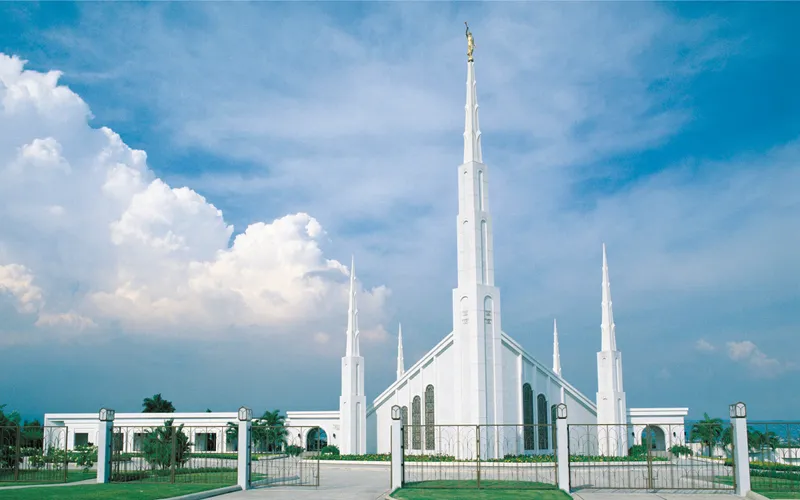

Manila Temple

About the Temple
The Manila Philippines Temple is the first temple of The Church of Jesus Christ of Latter-day Saints in the Philippines. Located in Quezon City. The temple serves thousands of members in the country and is an important spiritual landmark for Latter-day Saints in Southeast Asia..
Dedicated September 25, 1984: Dedicatory Prayer
Visiting Information
- Temple Drive, Green Meadows Subdivision, Quezon City, Philippines
- Hours: Check Ordinance Schedule
- Phone: +63 2 8635 9111
- Housing: Available